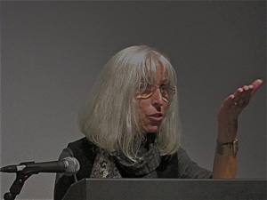

| ||||||||
|
||||||||
|
POETRY
�She writes with lyrical beauty� Jewish Review "These are the poems of a traveler and a lover who feels both the terror of time passing and the consolation of eternity. From such tension spring lovely poetic objects, ready for intelligent use." - Andrei Codrescu "In Storytelling in Cambodia Willa Schneberg writes a searing account of one of the darkest moments in modern history, Schneberg's haunting verse testimony, her portraits of those who dragged a once peaceful country into the nightmare of genocide, her passionate homage to an ancient culture now irrevocably lost move the reader even as they horrify." - Carolyn Forche  Guardino Gallery, Portland, April 16, 2011 BOOKS: THE BOOKS OF ESTHER, limited-edition letterpress chapbook produced in conjunction with the exhibition of the same title, Paper Crane Press, Half Moon Bay, California STORYTELLING IN CAMBODIA, Calyx Books, Corvallis, Oregon IN THE MARGINS OF THE WORLD, Plain View Press, Austin, Texas BOX POEMS, Alice James Books, Farmington, Maine REVIEWS OF STORYTELLING IN CAMBODIA: "Two Poets Grapple with Legacy of Holocaust," Eleanor Berry, Oregon State Poetry Association Newsletter, Vol. 49, No. 4, March 2007 Book Review, Lori Tsang, Multicultural Review, Spring 2007 Book Review, Judith Massee, Oregon Writers Colony Colonygram, Vol. 22, No 1, Jan / Feb 2007 Book Review, Camille-Yvette Welsch, Foreword Magazine, Nov/ Dec. 2006 "One of the ways we can fight oppression," Josephine Bridges, The Asian Reporter, Oct 10, 2006 "New Local Books," Jewish Review, Sept. 15, 2006 Book Review, B.T. Shaw, The Oregonian, July 23, 2006 SELECTED JOURNALS AND PUBLIC ART: 2013 - forthcoming - "21st Century Text," (on-line) 2013 - "Drash: A Northwest Mosaic," "The Portland Review" 2011 - "The Barefoot Review," "VoiceCatcher 6" 2010 - "Drash," "Poet Lore" 2009 - "Bridges: A Jewish Feminist Journal," "Poetry for the Masses," "Windfall: A Journal of Poetry of Place." 2008 - "Calyx: A Journal of Art & Literature By Women," " The Portland Alliance," Writers' Dojo (online). 2007 - "Trude Parkinson: sightings and passages," catalogue for exhibit by the painter, Art Gym, Marylhurst University, Marylhurst, Oregon. "Kyoto Journal," "Women's Review of Books" 2006 - "Bridges for Jewish Feminists and Our Friends," "Tricycle: The Buddhist Review" (online) 2005- "Mudfish," 2004 - �The Oregonian,� �Pearl,� �Rosebud,� �The Grove Review,� �West Wind Review,� 2003 - �Chaffin Journal,� "Bridges: A Journal for Jewish Feminists and Our Friends," "Nervy Girls," "El Hispanic News," Omega (on-line publication)," 2002 - "The Oregonian,"" Fireweed," "Illuminations: An International Magazine of Contemporary Writing," 2001 - "Blue Mesa Review," "Manzanita Quarterly," 2000- "American Poetry Review," "Clackamas Literary Review," 1999- "Oregonian;" "Five Fingers Review," 1998- "Michigan Quarterly Review," americas review," "Studio Potter," "Jewish Women's Literary Annual Volume III," 1997- "Salmagundi," "DoubleTake" (accepted for publication), "Bridges: A Journal...," "Xanadu," 1996- "americas review," " Jacaranda," 1995- "Silverfish Review," "Bridges: A Journal for Jewish Feminists and Our Friends," 1994- "Sing Heavenly Muse," 1993- "Exquisite Corpse," "Loyalhanna Review," "Bridges: A Journal...," "americas review," "Willamette Week," 1992- "The Jewish Calendar," "Sifrut," "Cincinnati Judaica Review," "Israeli Horizons," "Salmon Magazine," 1991- "Emrys Journal," "Poetry in Praise of the Islamic Woman" (broadside), "Arab/Muslim" issue of MR. COGITO PRESS, "Hawaii Pacific Review," "Southern Poetry Review," 1990- "Bridges: A Journal for Jewish Feminists and Our Friends," "Black Buzzard Review," "Poets' On:," "Psychopoetica," "Sow's Ear," "Hawaii Pacific Review," "Black River Review" "Poetry" (accepted for publication), 1989- "Permafrost," "Tikkun."  Jewish Writers' Reading, Oregon Jewish Museum, Nov 1, 2011 ANTHOLOGIES:  Alive at the Center, Pacific Poetry Project, Ooligan Press; Lit From the Inside: 40 Years of Poetry from Alice James Books, 2013 Before There Is Nowhere To Stand Palestine/Israel: Poets Respond to the Struggle, Lost Horse Press, 2012 Knocking at the Door: Approaching the Other, Birch Bench Press; Voicecatcher 6: New Writing & Art by Portland/Vancouver Area Women, A Tapestry of Voices: The Knoxville Writers� Guild Anthology, 2011. Voices Israel Anthology, 2010 (Volume 36) I Go to the Ruined Place: Contemporary Poets in Defense of Global Human Rights, Lost Horse Press, 2009 Women. Period, Spinsters, Ink, 2008 Walking Bridges Using Poetry as a Compass: Poems about Bridges Real and Imagined by 70 Poets, with Directions for Five Self-Guided Explorations, Urban Adventures Press, 2007. Poetry from Israel and Aboard, Voices Israel Group, Israel; Regrets Only, Little Pear Press. The Years Best Fantasy and Horror, 2006, Nineteenth Annual Collection Chance of A Ghost, Helicon Nine Press, 2005. Voices Israel Anthology, Voices Israel Group, Israel, 2005 / 2004; Knoxville Bound: A Collection of Literary Works Inspired by Knoxville, Tennessee, Metropulse Publishing, 2004; Bearing Witness: Teaching The Holocaust, Heinemann (textbook), Key West: A Collection, White Fish Press, 2001; Knowing Stones: Poems of Exotic Places, John Gordon Burke Inc., 2000; Portland Lights, A Poetry Anthology, Nine Lights Press, 1999; Points of Contact: Disability, Art, and Culture, University of Michigan Press, Passionate Lives: Eight Autobiographical Poem Cycles, Queen of Swords Press,1998; Beyond Lament: Poets of the World Bearing Witness to the Holocaust, Northwestern University Press, Evanston, Illinois, Claiming The Spirit Within, an anthology of poetry by women, Beacon Press, Boston, Massachusetts,1996; Hard Love: Writings on Violence and Intimacy, Queen of Swords Press, Eugene, Oregon, Each In Her Own Way, (anthology on menopause,) Queen of Swords Press, Eugene, Oregon, 1994; Tikkun: An Anthology, Tikkun Books, Oakland, CA,1992; Judi-isms, Long Beach, New York, 1991. ESSAYS, BOOK REVIEWS & BLOG POSTS:
SELECTED READINGS & TALKS
 Participants in the WRITING THE JEWISH MOTHER Workshop. 11/04/12 Oregon Jewish Museum, Portland WRITING THE JEWISH MOTHER The Jewish mother has been exalted, maligned and ridiculed. In this workshop we went beyond stereotypes to write poetry and prose about the lives of Jewish mothers, who are ourselves, our parents, and our friends. Through the drafts, we revealed the complexity of the Jewish mother, who embraces many identities besides her role within the family. To embody the Jewish mother we looked at excerpts from Michael Gold, Clifford Odets, Philip Roth, Irena Klepfisz and Grace Paley, who have explored the Jewish mother in relation to the Holocaust, religious practice, immigration, assimilation and the women's movement. 02/18/12 Milwaukie Poetry Series Workshop. Pond House, OR INVITING LITTLE RED RIDING HOOD, THE ORACLE, AND THE COAT OF MANY COLORS INTO OUR POEMS In this poetry workshop we utilized myth, fairy tales, parables, legends from world spiritual traditions to discover how Indra�s web or a gnome might belong in our poems. Poets who have drank from this well: Ann Sexton, Yehuda Amichai, Lawrence Ferlinghetti, Mahmoud Darwish and Louise Gluck, etc., will be considered. 10/10/10 Wordstock, Portland THE POET'S PALATE We fed our poetic appetites, and awakened our palates on the page. We wrote about the harvest, the marketplace, the sensuality of the epicurean experience, what we ingest, and what we imbibe. 10/2/10 Write on the Sound Conference, Edmunds Center for the Arts, Edmunds,Washington USING THE NEWS FOR POETRY Participants utilized articles found in newspapers and/or on the internet as prompts for new poems. 12/05/09 CORVALLIS ART CENTER. OR Sponsored by Calyx Books DREAMING THE POEM The logic of dreams can shake up our traditional way of thinking or writing, but a dream is not by itself a poem. Participants experienced how to transform dreams into poetry. Dream samples and poems inspired by dreams were provided. 08/23/09 At my Portland Office (one of a series of six summer workshops) WRITING THE SPIRITUAL POEM One's definition of the sacred is unique to each individual. Some of us believe there is a creator, some feel the numinous in the change of seasons, or simply in being totally in our present moment. Poems by such poets as Jane Hirshfield, William Stafford, Joy Harjo, Wislawa Szymborska, and Yehuda Amichai were utilized as prompts. 03/15/09 OREGON JEWISH MUSEUM, Portland WRITING POETRY OF THE JEWISH EXPERIENCE, Is a Jewish poem something written by a Jewish author, or must it have a Jewish theme? Participants explored how to consider the Jewish experience through poetry. Poems by Yehudi Amichai, Gerald Stern, Adrienne Rich, Philip Schultz, Marge Piercy, etc., were considered. Writing exercises were offered to motivate the creation of poems. 10/11/07, 10/10/05, 04/09/05 WORDSTOCK, Portland, OREGON STATE POETRY ASSOC. CONFERENCE, Eugene, TUCSON POETRY FESTIVAL, Arizona CREATING POEMS THROUHG THE ARTIST�S LENS, WORDSTOCK, Portland We employed the medium of photography for poem-making. Although New York's Museum of Modern Art did not create a photography department until 1940, photography has long been recognized as a fine art along with painting and sculpture. We viewed images of the familiar and the exotic, of the solitary and those in community, and read poems about place and the individual revealed through the painter's vision. 08/01/06 Newport, Oregon POETRY OF PLACE This workshop focused on the role of place in poetry. We explored the different inspirations that place can evoke in poem-making, how the childhood home, the vacation locales we will never see again, the towns we only read about, and sites of the imagination-- all become vibrant material for poems. We read place poems by contemporary poets and viewed digital images from familiar and exotic climes. 04/03/03 PORTLAND STATE UNIVERSITY CENTER FOR WRITING EXCELLENCE Portland, OR WRITING THE PERSONA POEM We explored how writing in a voice other than one�s own paradoxically gives the poet the opportunity to explore what he or she feels most deeply. By getting "inside" the life of another human being, real or imagined, issues of empathy and compassion for others come to the fore. The master poets utilizing this approach, including Ai, Adrienne Rich, Peg Boyers, Robert McDowell, Richard Jones were discussed. Digital Images of individuals were also utilized to motivate the writing experience. 08/02 GRACE EPISCOPAL CHURCH SUMMER PROGRAM Portland, OR POET/PHOTOGRAPHER-IN-RESIDENCE Offered a slide show of photographs and works on paper from the Visual Chronicle of Portland, offered a poetry workshop about place and helped Portland, students compose images of downtown Portland, the bridges and Oaks Bottom. 12/01 - 06/02 EMANUEL HOSPITAL Portland, OR ARTIST IN HEALTHCARE PROGRAM Offered poetry workshops to hospitalized youth. 10/00 - 2/01 MULTICULTURAL SENIOR CENTER Portland, OR POTTER/PHOTOGRAPHER-IN-RESIDENCE Offered a workshop entitled �Crossing The Gap;� each youth were paired with a senior in order to interview and document their personal history; reading at culmination. 3/00 - 6/00 PORTLAND IMPACT SENIOR PROGRAM with BUCHMAN STUDENTS ARTIST-IN-RESIDENCE Offered a workshop entitled "Growing Older, Growing Younger," utilized poetry writing,photography for seniors and students to explore issues childhood, aging and life; finale -- poetry reading and semi-permanent exhibit at Buchman School 12/99 - 2/00 SALVATION ARMY GREENHOUSE Portland, OR POET/POTTER -IN-RESIDENCE Worked with homeless street youth. 8/99- 9/99 MULTICULTURAL SENIOR CENTER Portland, OR POET- IN- RESIDENCE Offered a workshop entitled "Self Reflections: a workshop for seniors in self portraiture words & pictures;" poetry reading at culmination 4/99 - 5/99 PORTLAND IMPACT Portland, OR POET- IN- RESIDENCE Worked with at-risk youth. 1/80 - 6/80 Philippines, Korea, Japan, Okinawa POET/POTTER-IN-RESIDENCE Recipient of a matching grant from the N.E.A & D.O.D. schools; offered creative arts workshops to students (K-12) teachers & community members. PROFESSIONAL ORGANIZATIONS & HONORS: 2012 - Present, Board Member Calyx Press 2011 - Poets' Concord Contest Judge 2010 - Oregon State Poetry Association " Poet's Choice" Awards Judge 2007 - Oregon State Poetry Association "Dueling Judge" 2007 - Northwest National Service Symposium (AmeriCorps) Poetry Awards Judge 2004 - Reuben Rose International Poetry Competition Judge 2003 - Oregon State Poetry Association Fall Poetry Contest Judge 2003 - R.A.C.C.�s Professional Development Grant Recipient 2002 - Oregon Book Award Winner in Poetry 2000 - 2005 Member of the Selection Committee for the Visual Chronicle of Portland, a city-owned collection of works on paper relating to Portland. 1999 - Recipient of the Money for Women/Barbara Deming Memorial Fund Grant in Poetry 1999 - Recipient of the Walt Morey Poetry Fellowship Literary Arts, Inc. 1998-1999 - President, Northwest Writers Inc., a professional writers organization, Portland 1998 - Selected as a roster artist (poetry) Oregon's Regional Arts & Culture Council's Neighborhood Arts Program 1996 - Selected as a roster artist (poetry) Oregon's Regional Arts & Culture Council's Arts-In-Education Program 1994 - Recipient of Literary Arts, Inc. Fellowship in Poetry 1985 - Selected in Visual Arts and Literature, Artist-in-the- Schools Program, Massachusetts Institute for the Arts |
From Storytelling in Cambodia...
Hanuman, Leap For Me In the Ramayana, Hanuman leaps into Lanka to save Sita. Monkey face, with eyes the color of wilting forsythia, even as an infant the world was your rattle, the sun your mango. You jumped towards its fire until your father The Wind left the sky breathless and whisked you away to safety in the cave. Master of the prank, what about your escapade when you saved the life of the princess you hardly knew, out of duty, not love? Now I want you to leap for me -- for the silent one with a dark computer screen, the distracted one whose grogged clay never found a wheel, the disenchanted one whose heart never flew from her chest. Leave the gods behind on Mt. Meru and leap, and while you are at it: suck birds of paradise and lotus petals into the sky, unmingle sea lions on huge boulders and hurl them into the clouds and make underwater volcanoes cream again. Fling yourself off that mountain of immortals. I�m right here, baby leaning over the side of the divan poised to catch you, waiting to wrap my pale limbs around your thick white furry loins. Picturing Pol Pot for Vann Nath They do not execute me because I will paint Pol Pot�s picture. They let me sleep in a room with other painters and sculptors. We stop starving and no longer wear leg irons. I scrutinize His black and white photograph looking for the evil. They give me charcoal. My picture is to look just like the photograph, but I need colors to give a portrait life. When I use color and water they are happy with me. I paint Him plump and benign, but in my mind he is Ravana, the demon king with twenty fisted hands severed at the wrist, and ten heads that once spewed fire licked clean to their skulls by rats. He is a giant scream of an infant who messed himself and has to wait for me to clean him up. He is a mosquito tired of flailing who landed in the ceramic rainwater barrel next to my house just in time for the wooden lid to slam in place and kill the sky. From In the Margins of the World... Genuine Imitation Give me the fake, the imitation, the simulation, any day over the real thing. Give me the bronze garbage in Haymarket Square with the inlaid crumpled Boston Globe, embedded lettuce leaves, flattened fish scales, that will never be burned, bagged or rotted. Give me the plaster life size cows black with white spots shaped like clouds, in the parking lot outside the Hilltop Steak House, who will not experience the irritation of flies or the teat sucking machine. Give me my daughter's model trains endlessly circling towns that have no pollution, everyone's welcome and whoever�s sick goes to the doll hospital. Give me the poem, its room not even a page wide, where one enters as often as one likes to watch the man place quarters on his dead wife's lids, to feel the grief not your own. Staying Put I want to feel good staying put like the woman who makes rope in the mountains near Baguio She has never left her village and spins fine strands together to make rope so long it could wind around the village ten times Soon she will climb up the rope to heaven Her daughter who knows the secret of the rope has a daughter whose small fingers are learning to braid hair To Expand Freely in the Margin of the World On Oct. 7, 1901 Slimene Ehnni married Isabelle Eberhardt in Marseilles. My wife wanted beyond what there is. In Geneva before I knew her, her pen name was Nicholas Podolinsky. In Toulon dressed as a workman in a blue linen jacket, trousers and cap, she would drink with the sailors and pick a dark-eyed rowdy to take into a back alley and reveal her sex. We met in Algeria. I was a cavalry sergeant in the colonial regiment. Regal on my mount wearing a red spahi cloak and tight black boots I almost believed I was a Frenchman, but Isabelle was Moslem, fasting on Ramadan until the sun stretched out and snored over the mud domes of El Oued. She knew every salutation and pious exclamation in my language as if her knees and palms always prostrated themselves to Allah. Forced to rendezvous clandestinely, I would watch her gallop across the scrub her small body lost in a burnoose, its hood flapping. Arriving without a word she would leap off her stallion towards the well and plunge her shaved head into the cold water. Before long she is Si Mahoud, the young Turk on holiday from university, who smokes kief with legionnaires in brothels splendid with Sudanese beauties and soon disappears to visit desert lizards, the nomads of Morocco whose jewels are guns and powder, until the bout with malaria reminds her she is a woman trembling under a camel's hair blanket, delirious in a great dark tent. He wanted to make love without responsibility, to feel the absence of death's fingers in cometary moments of love-making, but she loved me. We embraced on the blue woolen mattress on the stone floor, my revolver next to us. Being half the man Si Mahoud was, never brilliant nor free, Isabelle chose him. I was already dead to her in Ain Sefra, when the wadis' yellow waters swept her away with the rubbish and the trees. From Box Poems... Bones After the morning shock treatment he was tossed on the black chair crumpled and flat a shirt without a chest. His wife piled the bones neatly on the upholstered arm. His daughter played with the bones, arranged them into a skeleton and was angry when he wouldn�t wear it. Now that she is older she understands. Often her body cannot support her bones. Gigantic Room There must be a gigantic room where in a place of honor a simple vase holds a day lily and the pterodactyl, mesophippus, mastodon, australopithecine, awk, passenger pigeon, chatterton, plath sit on mats holding cups warm with tea between their paws, claws, hooves, hands You can purchase Willa's books by clicking here. |